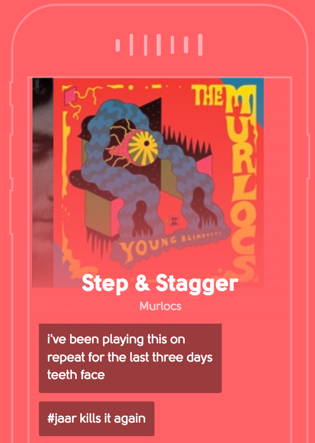
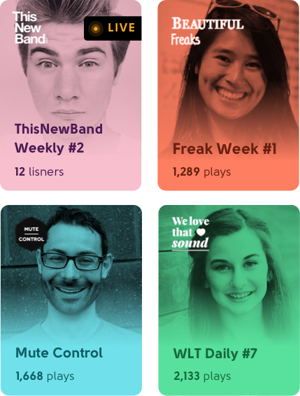
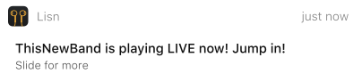
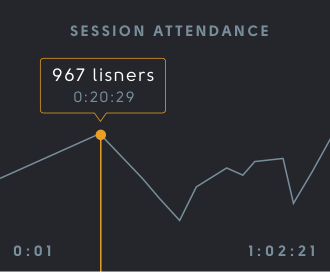
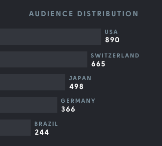
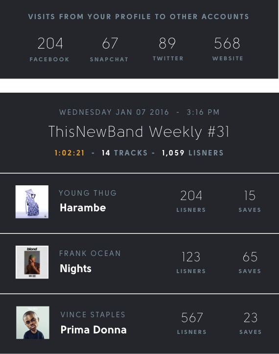
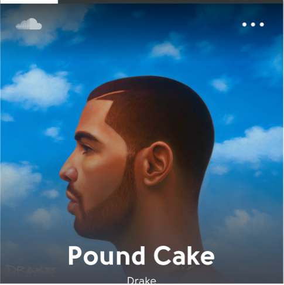

Broadcast hand picked music and chat with your fans
Go beyond playlists. Play live sets on interactive radio.
ARE YOU A MUSIC BLOGGER, CURATOR OR JOURNALIST?
Thanks! We'll be in touch.
Oops! Something went wrong while submitting the form

Go LIVE with the Lisn app
Our Android and iOS apps let you host a Lisn session and play tracks from Spotify and Soundcloud while chatting with the audience. Everything in synced in real time.

our mission
We’re decentralizing radio
Everyone claims to have great taste in music. Few can handpick good tracks from thousands.
We celebrate music curation as journalism. We distinguish professionals from amateurs.
We empower broadcasters and make them superheroes.
Build a Following
Fans follow you and we ping them when you go live. Expect groupies.

Drive traffic to the right places
We make it easy for your audience to check out your website and follow you on Snapchat, Twitter, Facebook and other social networks.
Rich Data Insights
Uncover insights into popular tracks, geography and listening behaviour



Session replays on your website & profile
Playlists are generated at the end of every session. We give you this handy little widget to embed everywhere. Try it - Play a track!

Your fans can save and share tracks instantly
Interactive radio like never before. Lisners can save and share tracks in a single tap without leaving your broadcast.